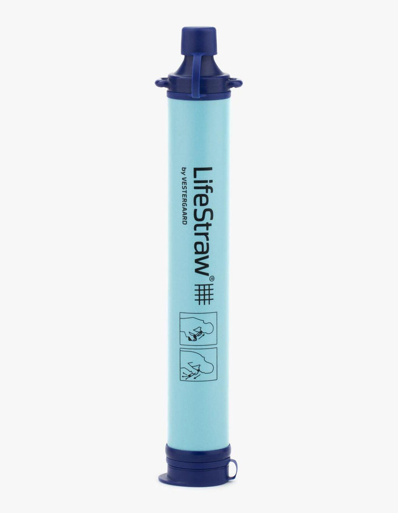
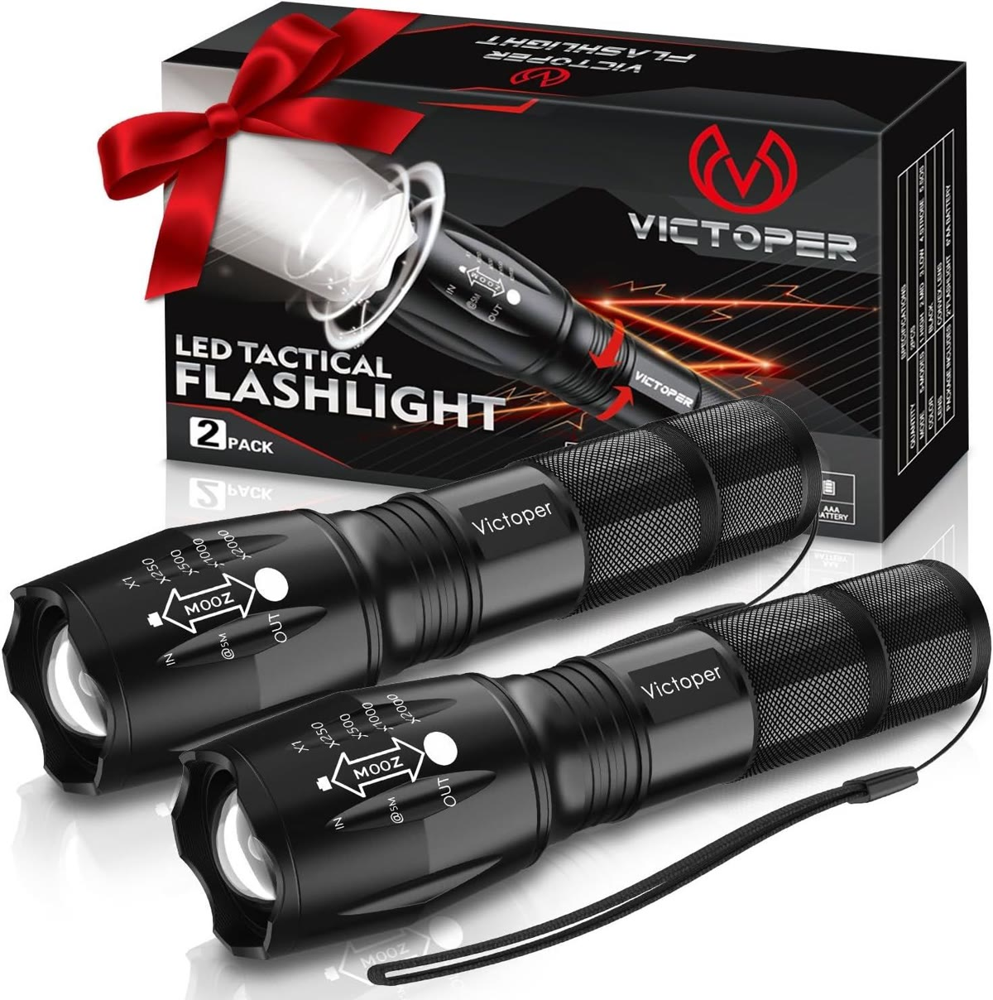
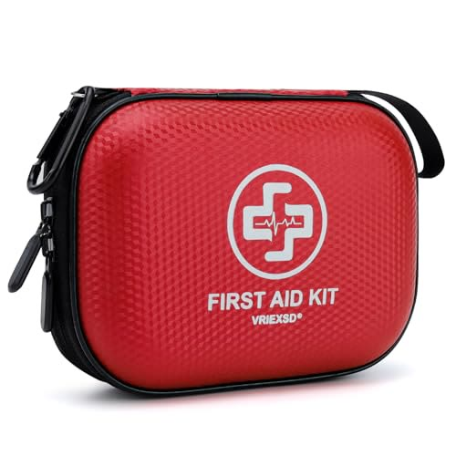
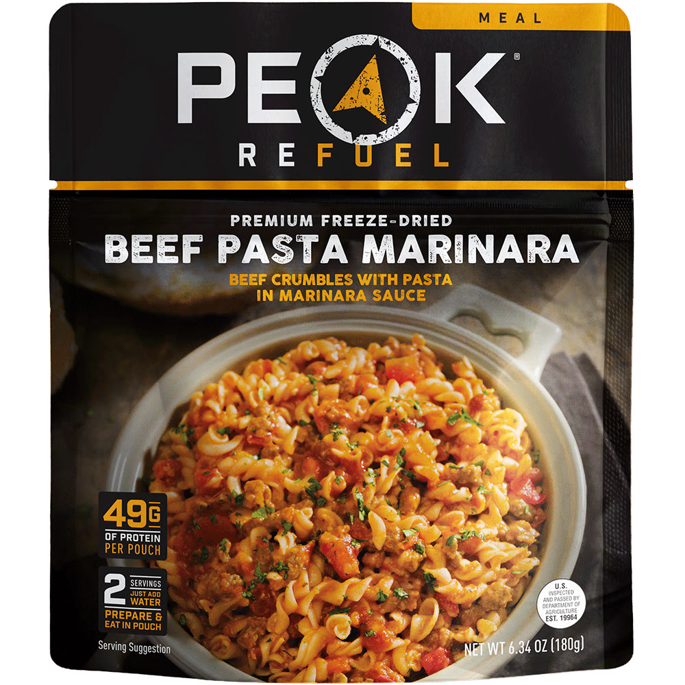
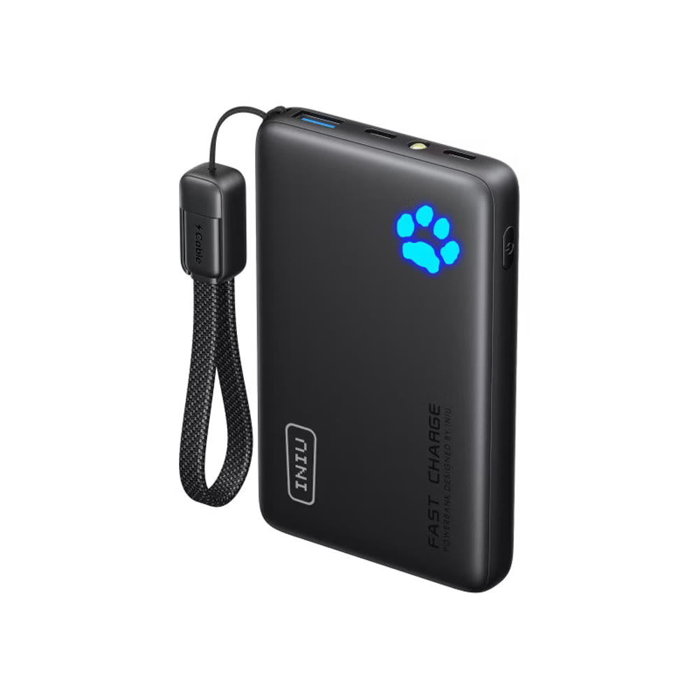
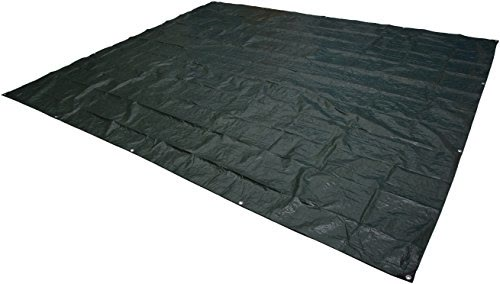

Maps
The streets and the places stay on the phone. You can search when the network is gone.


The streets and the places stay on the phone. You can search when the network is gone.
You get a route on foot, by bicycle or by car, and you follow the turns on the phone.

Water, medical care, emergency services and shops are marked. You can save a place you need to find again.

The app does not use GPS. You set your position on the map, and you can turn the motion sensors off.
You drop a pin, give it a name and save it on the phone. You can remove it later.
During a trip, the list of turns runs from the start to the place you chose.
There is no account and no charge.
Once the map is on the phone, search and routes do not need a network.
The app collects no data. Sensor readings stay on the phone.
Blackout Maps is free to download and use. The apps and the map data are maintained by the community.
Code, design and how the map feels in the hand.
Maps, updated information and more resources.
Test it, debug it, and help us improve the app.
You need a network to download the app and the map. After that, the map, the search and the routes work on the phone with no network.
No. You set your position on the map. Motion sensors can keep an approximate position, those readings stay on the phone, and you can turn the sensors off.
Yes. There is no account and no charge. The app collects no data.
Android is ready. The iOS app is not in the App Store yet.
Portugal downloads on first launch. Other countries and states are added from Settings. They are listed in the public catalog.
You can drop a pin, name it and save it on the phone. You can remove it later.
Android is ready to install. iOS is still to come. Download it while you still have a network.
Categories for gear you may want before an emergency.
Water you can drink, and a way to treat more.

A way to see when the power is out.

Care for cuts and serious bleeding.

Food you can keep when shops are closed.

A way to keep a light and a phone charged.

A dry place, and a simple repair.

Blackout Maps field guides
Build a plan for the emergencies that can interrupt everyday life. Our illustrated field guides walk you through practical decisions using the equipment, supplies and space you already have at home.
How-to videos for the first things an emergency asks of you.
Flooding can contaminate drinking water. Here is what you need to know.
How to use a Tourniquet to Control Life-Threatening Bleeding
How to Use a Portable Fire Extinguisher Training Video
16. How to Shut Off Utilities
Emergency Debris Shelter | No Tools | Survival Shelter build | Lost in the Forest Scenario